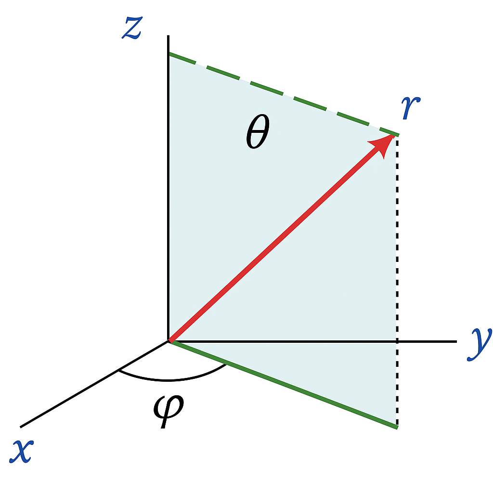
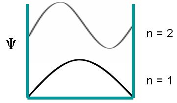
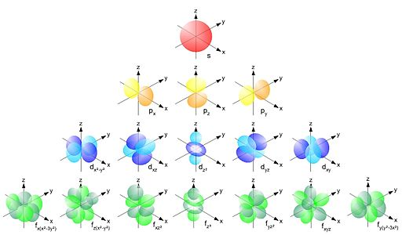

6. Quantum Mechanics and Atomic Structure#
Quantum mechanics is a fundamental theory in physics that describes the behavior of matter and energy at atomic and subatomic scales. Classical mechanics fails to explain many phenomena observed in microscopic systems, such as the stability of atoms and the discrete energy levels of electrons.
In quantum mechanics, the wavefunction (Ψ) represents the state of a quantum system, and its square (|Ψ|²) or more exactly the complex conjugation \( \Psi \Psi^* \) gives the probability of finding a particle in a given region of space. The behavior of the wavefunction is governed by the Schrödinger equation, which determines the allowed energy levels of quantum systems.
6.1 Wave-Particle Duality and Quantum Mechanics#
6.1.1 The Wave-Particle Duality#
Matter and light exhibit both wave-like and particle-like properties.
Each particle has an associated de Broglie wavelength:
\(\lambda = \frac{h}{p} = \frac{h}{mv} \)
This led to the concept of quantised electron waves around the nucleus.
import numpy as np
import matplotlib.pyplot as plt
''' We can make a sketch of a wavepaket by
combining a Guassian funciton with a cosine wave'''
# Parameters for the wavepacket
x = np.linspace(-100, 100, 1000) # position array
k0 = 0.4 # central wavenumber
sigma = 20 # width of the Gaussian envelope
# Gaussian envelope
envelope = np.exp(-x**2 / (2 * sigma**2))
# Carrier wave
carrier = np.cos(k0 * x)
wavepacket = envelope * carrier
# Plotting
plt.figure(figsize=(10, 5))
plt.plot(x, wavepacket, label='Wavepacket', color='blue')
plt.plot(x, envelope, 'r--', label='Envelope')
plt.plot(x, -envelope, 'r--')
plt.title("A Gaussian Wavepacket")
plt.xlabel("Position /x")
plt.ylabel("Amplitude")
plt.legend()
plt.tight_layout()
plt.show()

Fig 6.1 An cartoon of a 1D wavepacket representing a particle.
6.1.2 Double-Slit Experiment and Wave-Particle Duality#
6.1.2.1 Overview#
One of the most famous and illustrative experiments demonstrating wave-particle duality is the double-slit experiment using electrons (or photons).
6.1.2.2 Setup#
A source emits single electrons (or photons) toward a barrier with two narrow slits.
Beyond the slits, a detection screen (e.g. a phosphor screen or CCD detector) records where each particle lands.
6.1.2.3 Observations#
If both slits are open, and no measurement is made to determine which slit the electron passed through:
An interference pattern forms on the detection screen — a series of light and dark fringes, typical of wave behavior despite the electrons entering one by one.
If a detector is placed to determine which slit the electron goes through:
The interference pattern disappears.
Instead, two single-slit patterns appear — consistent with particle-like behavior.
Here is a link to a video of Jim Al-Khalili discussing this experiment.
6.1.2.4 Conclusion#
When not observed, electrons behave like waves, interfering with themselves.
When observed, they behave like particles, going through one slit or the other.
This experiment reveals that particles such as electrons exhibit both wave-like and particle-like properties, depending on the measurement context.
6.1.3 Significance of Wave-Particle Duality#
6.1.3.1 Foundational Principle of Quantum Mechanics#
Wave-particle duality shows that classical distinctions between “particles” and “waves” break down at quantum scales.
6.1.3.2 Replaces Classical Intuition#
Electrons, photons, and even atoms cannot be described solely as particles or waves. They are described by a wavefunction, which encodes probability amplitudes. The function is typically complex (it has real and imaginary parts).
6.1.3.3 Led to Development of Quantum Theory#
Inspired Schrödinger’s wave equation, which treats particles as wave-like entities evolving over time.
Led to concepts like quantum superposition, entanglement, and uncertainty.
6.1.3.4 Philosophical Importance#
Challenges classical ideas of reality and measurement — the outcome depends on how the system is observed.
6.1.3.5 Summary Table#
Aspect |
Wave Behaviour |
Particle Behaviour |
|---|---|---|
Evidence |
Interference pattern |
Single impacts on detector |
Conditions |
No which-path detection |
With which-path detection |
Interpretation |
Delocalized, spread-out wavefunction |
Localized particle |
Significance |
Quantum superposition and interference |
Measurement collapses wavefunction |
In essence, wave-particle duality forces us to rethink the fundamental nature of matter and light.
It is a powerful reminder that at the quantum scale, nature does not conform to our everyday experience.
6.2 Quantum Mechanics#
The Bohr model was an important step in understanding atomic structure, but modern quantum mechanics provides a more complete picture.
Instead of treating electrons as orbiting particles, quantum mechanics describes them as waves using a function called the wavefunction \( \Psi(x,t) \), which contains all the information about the electron.
6.2.1 The Schrödinger Equation#
The fundamental equation of quantum mechanics is the Schrödinger equation, which determines how the wavefunction \(\Psi\) behaves.
6.2.2 Time-Independent Schrödinger Equation#
For an electron moving in an atom, we use the time-independent Schrödinger equation:
\(\frac{\hbar^2}{2m} \frac{d^2\Psi}{dx^2} + V(x)\Psi = E\Psi \)
where:
\(\hbar = \frac{h}{2\pi} \) is the reduced Planck’s constant.
\( m \) is the mass of the electron.
\( V(x) \) is the potential energy (for a hydrogen atom, this is the electrostatic attraction to the nucleus).
\( E \) is the total energy of the electron.
\( \Psi(x) \) is the wavefunction, which tells us where the electron is most likely to be found.
It is interesting to note that apart from the complication of the partial differientials and \(\psi\) that the form is \(K + U=E\). The left hand side has a strage way of writting KE. \(KE= \frac{1}{2}mv^2\) which be written as \(KE= \frac{p}{2m}\)where m is mass and p is momentum. This is the form KE is in the Equation above.
6.2.3 In Three Dimensions (Spherical Form)#
Since atoms are three-dimensional, we use spherical coordinates

Fig 6.2 Spherical coordinate system.
You do not need to know this maths (this year)!!!
\(\frac{\hbar^2}{2m} \nabla^2 \Psi + V(r) \Psi = E \Psi \)
where:
\( \nabla^2 \) is the Laplacian operator, which accounts for the three-dimensional motion of the electron.
\( r \) is the distance from the nucleus.
\( V(r) = -\frac{e^2}{4\pi\epsilon_0 r} \) is the Coulomb potential energy from the nucleus.
The x, y, z coordinates are transformed into \(r, \theta, \phi \) - the solutions will therefore by in spherical coordinates
6.2.4 The Role of the Hamiltonian Operator#
The Hamiltonian operator \(\hat{H}\) represents the total energy of a quantum system. It consists of kinetic and potential energy terms:
where:
\(\hat{H} \) is the Hamiltonian operator,
\( E \) is the total energy of the system,
\( \Psi \) is the wavefunction.
The Hamiltonian depends on the system being studied. In the case of an electron in an atom, the potential energy comes from the Coulomb attraction between the negatively charged electron and the positively charged nucleus.
6.3 The One-Dimensional (1D) Box Problem#
One of the simplest quantum mechanical models is the particle in a one-dimensional box, where a particle is confined to move in a region with impenetrable walls. The wavefunction solutions are standing waves, and the allowed energy levels are quantized. The eigenvalues are:
where:
\( n \) is a positive integer (quantum number),
\( h \) is Planck’s constant,
\( m \) is the mass of the particle,
\( L \) is the length of the box.
This quantization of energy is a fundamental feature of quantum systems. 
Fig. 6.3 The eigenfunctions to the 1D box are sine waves.
6.4 Quantum Numbers and Electron Configurations#
In three-dimensional quantum systems, such as atoms, the position of an electron is best described in spherical coordinates (r, θ, ϕ). The quantum numbers that arise from solving the Schrödinger equation in this system determine the electron’s allowed states.
6.4.1 Principal Quantum Number (n)#
Symbol:
nValues:
1, 2, 3, ...Represents the energy level and size of the orbital.
Higher values of
ncorrespond to orbitals that are farther from the nucleus.Associated with the radius \(r\)
6.4.2 Orbital Quantum Number (l)#
Symbol:
lValues:
0, 1, 2, ..., (n-1)Defines the shape of the orbital.
Corresponds to different orbital types:
l = 0→ s-orbital (spherical)l = 1→ p-orbital (dumbbell-shaped)l = 2→ d-orbital (cloverleaf-shaped)l = 3→ f-orbital (complex shape)
Associated with the angle \( \theta\)
6.4.3 Magnetic Quantum Number (m)#
Symbol:
mValues:
-l, ..., 0, ..., +lDetermines the orientation of the orbital in space.
Associated with the angle \( \psi \)
6.4.4 Spin Quantum Number (s)#
Symbol:
sValues:
+½(spin-up) or-½(spin-down)Represents the intrinsic angular momentum (spin) of the electron.
Electrons in the same orbital must have opposite spins due to the Pauli Exclusion Principle.
6.5 Atomic Orbitals and Their Shapes#
The solutions to the Schrödinger equation for an electron confined in a spherical potential define the atomic orbitals. These orbitals describe the probability of finding an electron in different regions of space around the nucleus.
s-orbitals (
l = 0): Spherical in shape, centered around the nucleus.p-orbitals (
l = 1): Dumbbell-shaped, oriented along the x, y, and z axes.d-orbitals (
l = 2): More complex shapes, often resembling cloverleaves.f-orbitals (
l = 3): Even more intricate shapes, important in heavy elements.
These orbitals do not describe the path of an electron but rather the regions where the electron is most likely to be found.
.
Fig 6.4 3D rendered representations of the s, p, d, and f orbital shapes.
6.6 Quantized Angular Momentum: Bohr Model vs. Quantum Mechanics#
6.6.1 Bohr Model and Its Assumptions#
In the Bohr model:
Electrons move in fixed circular orbits around the nucleus.
The angular momentum of an electron in orbit is quantized according to the equation:
\[L = n \hbar \]\(\hbar \) is the reduced Planck’s constant \( h/2\pi\),
6.6.2 Quantum Mechanical Angular Momentum#
The orbital angular momentum in quantum mechanics is given by:
where:
\(L\) is the magnitude of the angular momentum,
\( l\) is the orbital quantum number \(( l = 0, 1, 2, ..., n-1 )\).
6.6.3 Why the Bohr Model Was Incorrect#
Fails for Multi-Electron Atoms
Electrons Are Not Classical Particles
Orbital Angular Momentum in the Ground State:
The Bohr model predicts nonzero angular momentum for
n = 1.Quantum mechanics predicts
L = 0forn = 1, l = 0.
Electron Motion is Defined by Wavefunctions.
6.7 Electron Spin and the Pauli Exclusion Principle#
In addition to orbital angular momentum, electrons have an intrinsic angular momentum, known as spin. The concept of spin was first introduced by Paul Dirac through a relativistic interpretation of quantum mechanics.
Spin quantum number (
s): Takes values of+½or-½.The Stern-Gerlach experiment (1922) provided experimental evidence for electron spin.
The Pauli Exclusion Principle, formulated by Wolfgang Pauli, states:
No two fermions (such as electrons) can occupy the same quantum state simultaneously. I often add ‘Within the same system’ - in otherwords in atoms are far apart they can be considered as seperate non-interacting systems.
6.7.1 Fermions vs. Bosons#
Fermions (e.g., electrons, neutrons, protons) obey the Pauli Exclusion Principle and have half-integer spin (
±½).Bosons (e.g., photons, gluons) do not obey the exclusion principle and have integer spin (
1, 2, ...).
6.8 Summary#
Quantum mechanics describes particles using wavefunctions governed by the Schrödinger equation.
Quantum numbers (
n, l, ml, s) define the allowed energy states and spatial distribution of electrons.Atomic orbitals determine where electrons are likely to be found.
Electrons have both orbital and intrinsic angular momentum (spin).
The Pauli Exclusion Principle dictates electron configurations in atoms.
These principles are fundamental to understanding atomic structure, chemical bonding, and nanotechnology applications.